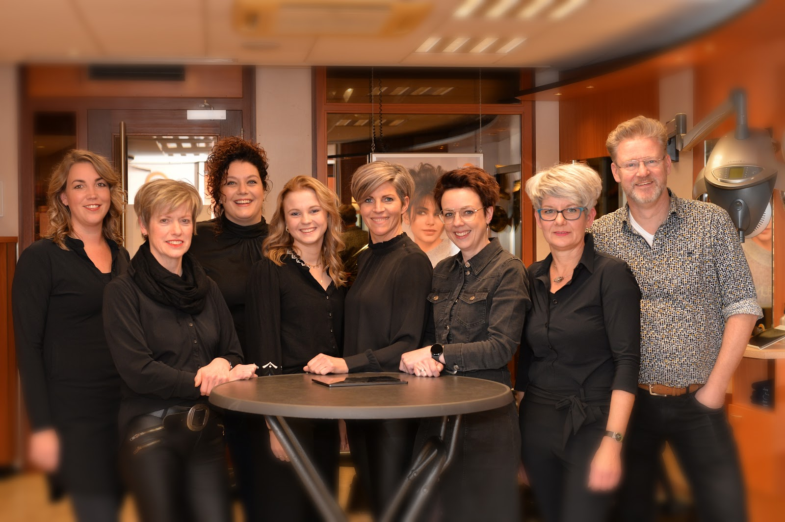
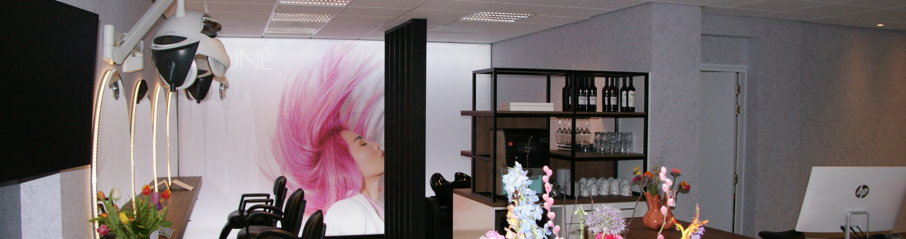
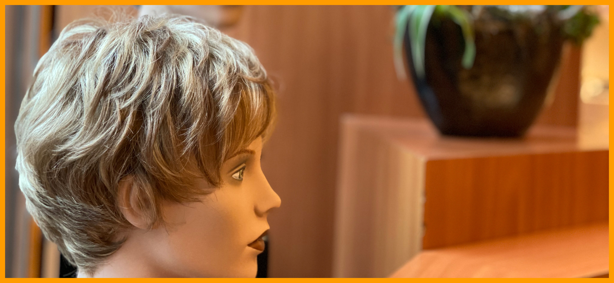
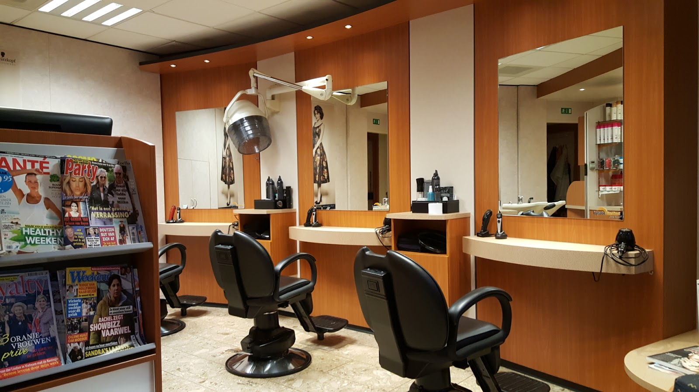

Dames- en herenkapper in Aalten, sinds 1933
Goed geknipt.
Koffie erbij.
Een echt familiebedrijf aan de Landstraat, voor dames en heren. Eerst luisteren naar wat u wilt, dan pas de schaar erin.
4,8 uit 64 Google-reviews

Begonnen met knippen en scheren. Nooit meer opgehouden.
Kapsalon ter Maat is een echt familiebedrijf. Wat begon als herenkapper is uitgegroeid tot een volwaardige dames- en herenkapsalon. Inmiddels staat de derde generatie achter de stoel.
-
1933
Derk ter Maat opent een herenkapsalon, waar volop geknipt en geschoren wordt.
-
Daarna
Zoon Dick en schoondochter Gerda komen in de zaak.
-
1991
Kleinzoon Wybe gaat in de kapsalon werken.
-
Nu
Een dames- en herenkapsalon met een team van negen, waar u ook terecht kunt voor al uw haarwerk.

Waarvoor u bij ons in de stoel gaat zitten
Dames
Knippen en stylen. Onze hairstylistes denken met u mee over wat bij u past.
Heren
Hier begon het allemaal in 1933. Gewoon goed geknipt, precies zoals u het wilt.
Krullen
Marjan en Jacqueline zijn Curlsys-specialistes: zij knippen krullen zoals krullen geknipt willen worden.
Haarwerken
Toupets, pruiken en onderhoud van uw haarwerk, voor dames en heren. Discreet en persoonlijk. Lees hoe dat gaat
Haarwerken bij Kapsalon ter Maat
Nieuw haar, zonder dat de buitenwereld het ziet.
Sommige mensen worden al jong kaal, anderen later of door ziekte. Niet iedereen accepteert dat, en dat hoeft ook niet. Wij zijn gespecialiseerd in haarwerken (toupets), pruiken en het onderhoud ervan. Naast uw aanvullend haar knippen en stylen we ook uw eigen haar.

- Privacy voorop
- Niet iedereen praat graag over kaalheid. Onze salon is zo ingericht dat u zich op uw gemak voelt, met een persoonlijke ontvangst en begeleiding. U kunt ook 's avonds komen, en als u dat wenst komen wij bij u thuis of in het ziekenhuis.
- Eerst een intakegesprek
- Binnen 5 dagen, vaak zelfs dezelfde dag. We nemen ruim de tijd, laten u de verschillende haarsoorten zien (echt of synthetisch) en kijken samen wat bij uw uiterlijk past. Geheel vrijblijvend en kosteloos.
- Kosteloos reserveren
- Krijgt u een behandeling waardoor u haar kunt verliezen? Reserveer dan vooraf alvast een haarwerk. Verliest u geen haar, dan zit u nergens aan vast.
- Levertijd
- Op voorraad knippen we het direct op maat. Moeten we bestellen, dan duurt het twee dagen tot een week. Maathaarwerk kan tot 12 weken duren.
- Garantie en vergoeding
- We zijn AHS en SGC erkend en gecertificeerd, en geven 6 maanden garantie op door ons geleverde haarwerken. We hebben contracten met de meeste zorgverzekeraars en regelen de aanvraag indien nodig voor u.
Wat klanten over ons zeggen
4,8 uit 64 reviews op Google
"Fijne kapsalon met professionele, vriendelijke en meedenkende kappers. Er hangt altijd een goede sfeer en de klant staat centraal. Kom er heel graag."
"Gezellige kapsalon waar men voor ouderwetse prijzen een goed kapsel kan laten aanmeten. Vriendelijk en servicegericht. Vantevoren een afspraak maken is handig gezien de populariteit. Goede koffie."
"Kort gezegd. Ik ga al bijna 32 jaar naar hetzelfde kapper. Aardig personeel"
"Fijne kapper, luistert goed naar je wensen en hangt een fijne sfeer"
"Goed ontvangen met koffie, en een handdruk. Het belangrijkste was knippen! Mooi volgens mijn wensen geknipt. Zal volgende keer teruggaan."
Wie u aan de stoel treft
Heeft u een vaste kapper? Hier ziet u op welke dagen ze er zijn.
-
Wybe
Haarwerkspecialist en allround kapper
Dinsdag tot en met zaterdag
-
Marijke
Teamleider
Maandag of zaterdag, woensdag en vrijdag
-
Ineke
Hairstyliste
Maandag, dinsdag, woensdag en donderdag
-
Marjan
Hairstyliste en Curlsys-specialiste
Woensdagmorgen, donderdag, vrijdag en zaterdag
-
Jacqueline
Hairstyliste en Curlsys-specialiste
Maandag, dinsdag, donderdag en vrijdag
-
Suzanne
Hairstyliste
Maandag of zaterdag, dinsdag en woensdagmiddag en -avond
-
Jetske
Hairstyliste
Zaterdag
-
Veronique
Hairstyliste
Maandag
-
Angelina
Junior styliste
Kom gerust binnen
Bel of mail voor een afspraak, of loop even langs, dan kijken we wanneer u terecht kunt. Op woensdag zijn we open tot 20:00 uur.
| Maandag | 08:00 - 14:00 |
| Dinsdag | 08:00 - 12:30, 13:30 - 18:00 |
| Woensdag | 08:00 - 12:30, 13:00 - 20:00 |
| Donderdag | 08:00 - 12:00, 13:30 - 18:00 |
| Vrijdag | 08:00 - 12:00, 13:30 - 18:00 |
| Zaterdag | 08:00 - 14:00 |
| Zondag | Gesloten |

Zonder afspraak?
Proberen mag altijd. Een afspraak voorkomt wachten. Nog nooit bij ons geweest? Kom gerust eens binnen.
Parkeren
Beperkt in de straat. Op 300 meter parkeert u gratis bij de Albert Heijn en op het Lage Blik. Let op de blauwe zone: met parkeerschijf 1½ uur gratis.